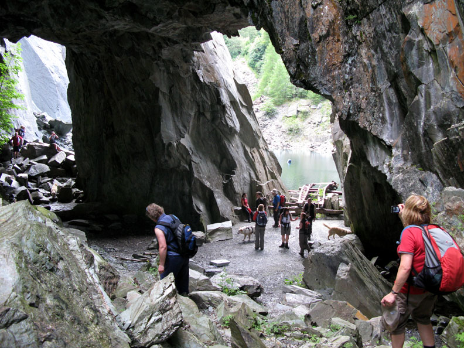

Theo tờ Daily Mail đưa tin, nhiếp ảnh gia Peter Bardsley đã công bố một số tấm ảnh chụp được tại hồ Hodge Close Quarry thuộc bang Cumbria, nước Anh.

Điều khiến mọi người kinh hãi là hình ảnh không gian quanh hồ được chụp lại giống y hệt một chiếc đầu lâu.
Hồ nước bí ẩn thu hút rất nhiều người ưa mạo hiểm tới khám phá.
Mặt dù nước hồ rất lạnh, tới 6 độ C và sâu tới 29 mét nhưng vì có những đường đi khác được nối lên mặt đất nên những người thợ lặn thích mạo hiểm vẫn tìm tới nơi đây để thử thách độ bền gan của chính mình.
Tuy nhiên, tại hồ này, ba người thợ lặn đã tử nạn không hiểu vì lý do gì. Điều đó khiến nó mang một điều bí hiểm và mang tiếng xấu là vùng đất chết.
Một hình ảnh khác của hồ này đã được nhiếp ảnh gia Bardsley phát hiện ra. Toàn cảnh của hồ khiến ông liên tưởng tới mô hình của một chiếc hộp sọ và ông đã chụp lại.
Sự đáng sợ của hình ảnh này chính là do những hòn đá in bóng xuống mặt hồ đã tạo nên một sự trùng hợp ngẫu nhiên. Nó khiến người ta liên tưởng tới một chiếc hộp sọ khổng lồ, đáng sợ, có hai con mắt trũng, mũi và những chiếc răng nanh khiếp đảm.
Nhiếp ảnh gia này cũng khẳng định, ông không hề chỉnh sửa photoshop, mà đó là một bức ảnh chụp chân thật. “Tôi biết đó là một nơi nhiều thợ lặn đã tử nạn. Chỉ cần nhìn vào bức ảnh này, cũng cảm thấy nổi da gà”, Bardsley nói.
Theo Kienthuc
Bình luận của bạn: